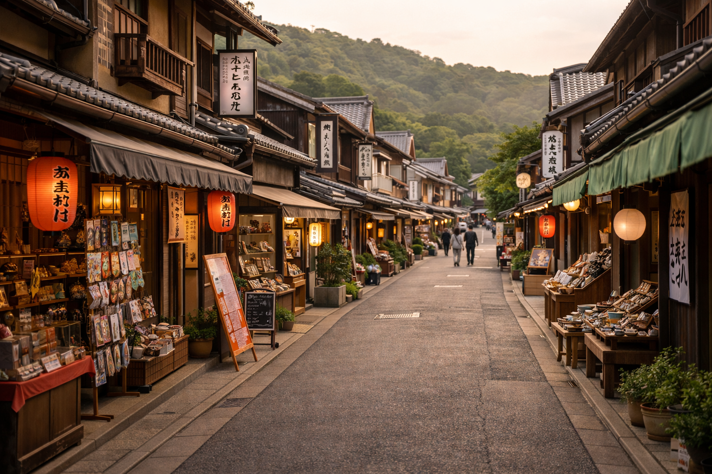
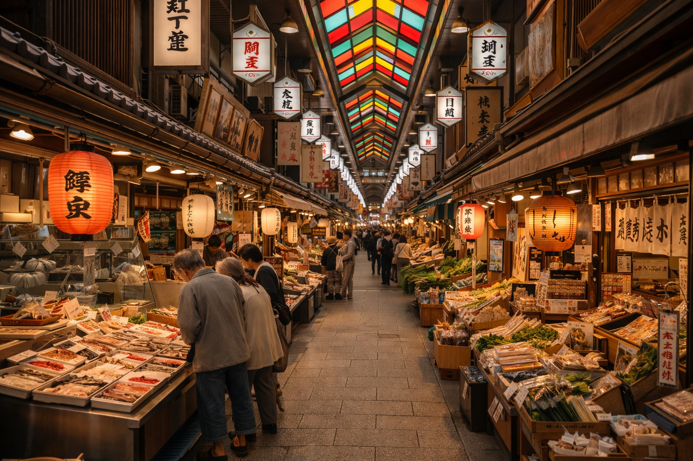

Hidden Places to Visit in Japan — Local Destinations Beyond the Tourist Trail
Authentic Japan travel destinations that are beloved by locals but rarely appear in English travel guides.

Komachi District, Tokyo

Looking for a hidden neighborhood in Tokyo away from the tourist crowds? Komachi District is a quiet residential area in Setagaya known for its charming old shotengai (local shopping street), small family-owned businesses, and a beloved neighborhood shrine. This is everyday Tokyo life at its most authentic — the kind of hidden gem in Tokyo that most international travelers never discover.
Address: 3-14 Komachi-dori, Setagaya, Tokyo
Best for: Walking, photography, authentic local Tokyo atmosphere
Nishihama Covered Market, Osaka

One of Osaka's best kept local secrets, Nishihama Covered Market has served the local community for over 60 years. Vendors sell fresh produce, handmade Japanese pickles, and affordable home-cooked lunches loved by Osaka residents. If you want to experience authentic Osaka culture beyond Dotonbori, this hidden local market is the perfect destination.
Address: 7-2 Nishihama-cho, Naniwa, Osaka
Best for: Authentic Osaka food experience, local culture, people watching
Okudera Moss Garden, Kyoto
While most tourists visit Kyoto's famous paid gardens, locals quietly treasure Okudera Moss Garden — a free, serene moss garden maintained by a neighborhood temple for generations. This hidden Kyoto destination is known mainly among residents and offers a peaceful, crowd-free nature experience that the well-known Kyoto tourist spots simply cannot match. Visit on an early morning after rain for the most beautiful scenery.
Address: 15 Okudera-machi, Ukyo, Kyoto
Best for: Peaceful nature, hidden Kyoto experience, photography